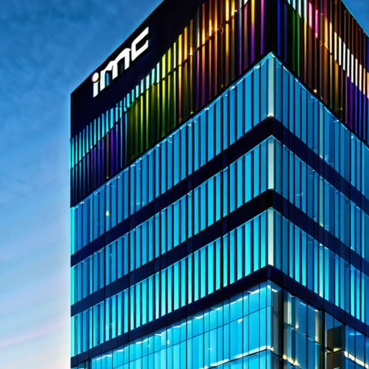

Please note: You will be called for interview only if you are eligible based on the below mentioned criteria.
Courses & Discipline: 2022 & 2023 Year of Passing Graduates from Arts, Commerce & Science Streams. B.Com, BA, BSc, BBA, BBM, BMS, BAF, BBI, BSW from a recognized university / college.
Candidates should have all the mandatory documents – 10th,12th Original Marksheets, UG marksheets, Provisional Degree Certificate/Original Degree certificate, Aadhar ID and Pan Card.
Course Types: Only full-time courses will be considered (part-time / correspondence courses will not be considered). Candidates who have completed their Secondary and / or Senior Secondary course from NIOS (National Institute of Open Schooling) are also eligible to apply if the other courses are full-time.
A Job Title: Frontend Developer (React.js/Next.js).
Company Overview: Infoskills Technology is a dynamic and innovative IT and Services company committed to delivering cutting-edge solutions. We pride ourselves on fostering a collaborative and inclusive work environment where creativity and technical excellence thrive.
Position Overview:We are seeking a skilled Frontend Developer with expertise in React.js and Next.js to join our growing team. As a Frontend Developer, you will be responsible for creating and implementing visually appealing and intuitive user interfaces for our web applications. The ideal candidate should have a passion for frontend development, a keen eye for design, and a strong understanding of web technologies.
Interview Question papers got leak in Zoho information technology campany.
In a surprising turn of events, ZOHO, a prominent information technology company, found itself facing a significant challenge as its interview questions were leaked on the internet. The breach raised concerns about the confidentiality of the company's hiring process and the security of sensitive information. ZOHO, known for its innovation and cutting-edge solutions, now faces the task of addressing the aftermath of this leak to maintain its reputation and ensure the integrity of its recruitment process.
As the incident unfolds, the tech community closely watches how ZOHO responds and implements measures to prevent future breaches, emphasizing the critical importance of cybersecurity in today's digital age.
A Job Title: Frontend Developer (React.js/Next.js).
Your Core Responsibilities: As a graduate software engineer at IMC, you will develop cutting-edge technology in advanced networks and algorithms support the development of our trading platform and software stack gain experience across the entire software development lifecycle collaborate with traders, quants and hardware engineers to improve our systems
Your Skills and Experience: B. Tech in Computer Science or Electrical Engineering from Tier I Engineering college. Graduating batch of 2024. Advanced analytical skills and a desire to solve complicated problems programmatically. Good knowledge of algorithms and data structures. Proficient in a programming language (Java or C++ preferred). A shared interest in financial markets, though no prior knowledge or experience is required.
